Govindarajan, Rebain, Yi, Tagliasacchi · arXiv:2502.01157 (2025)
Seminar nhóm nghiên cứu tái tạo 3D · Tháng 9/2026
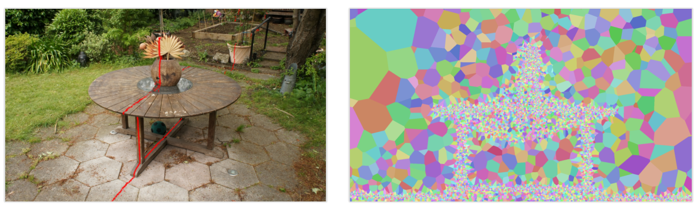
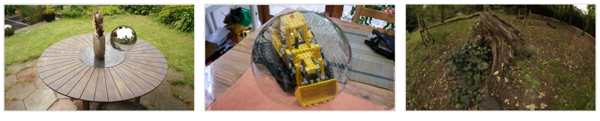
Phản xạ, khúc xạ, bóng đổ cần tia thứ cấp; rasterization chỉ có tia sơ cấp.
Chiếu EWA tuyến tính hóa theo camera lỗ kim; mắt cá, màn trập cuộn cần xấp xỉ riêng.
Sắp xếp theo tâm Gaussian gây popping; cần sửa bằng kỹ thuật riêng.
| NeRF | 3DGS | 3DGRT | RadFoam | |
|---|---|---|---|---|
| Nguyên thủy | trường liên tục (MLP) | Gaussian chồng lấn | Gaussian chồng lấn | ô Voronoi không chồng lấn |
| Kết xuất | ray marching, lấy mẫu | rasterization theo ô | dò tia, BVH (OptiX) | dò tia, đi qua mặt ô |
| Tích phân dọc tia | xấp xỉ bằng mẫu | xấp xỉ, thứ tự theo tâm | theo từng giao điểm | chính xác |
| Cấu trúc tăng tốc | lưới occupancy | sắp xếp theo ô | BVH, $O(\log n)$ mỗi truy vấn | không cần; kề nhau có sẵn |
| Phần cứng | GPU | GPU | cần RT core | GPU lập trình được |
Cộng qua các đoạn cho đúng công thức rời rạc, không có sai số lấy mẫu.
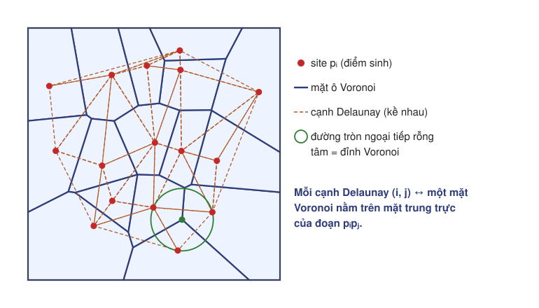
Mặt trung trực của đoạn $\mathbf p_i\mathbf p_j$; tồn tại khi $(i,j)$ là cạnh Delaunay.
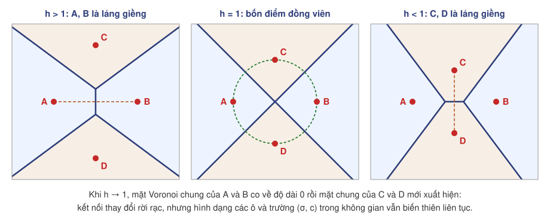
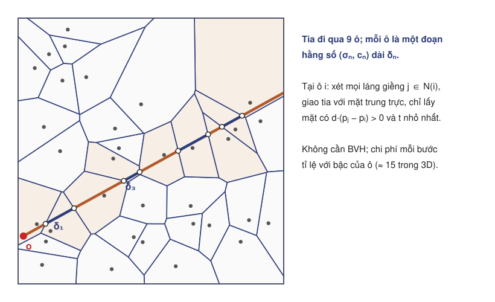
Chỉ xét mặt "phía trước": $\mathbf d\cdot(\mathbf p_j-\mathbf p_i)\gt0$. Điểm ra là $t_j$ nhỏ nhất.
Không có số mẫu cố định: số bước bằng số ô tia đi qua trước khi $T\le\epsilon$.
Không sắp xếp: thứ tự ô có sẵn từ hình học, đúng cho từng tia.
$C_{\gt n}$: màu đóng góp bởi các ô sau ô $n$. Với $\delta_n=t_n-t_{n-1}$:
Điểm ra $\mathbf x=\mathbf o+t_n\mathbf d$ nằm trên mặt chung của site $\mathbf p_i$ (trước) và $\mathbf p_j$ (sau):
| Tham số mỗi site | Kích hoạt | Tỉ lệ học (paper) | Cấu hình mã nguồn |
|---|---|---|---|
| Vị trí $\mathbf p_i$ (3) | — | $2\times10^{-4}\to2\times10^{-6}$ (cosine) | $\to5\times10^{-6}$; cố định từ vòng 18k |
| Mật độ $\sigma_i$ (1) | softplus, $\beta=10$ | $10^{-1}$, giảm cosine 10 lần | $10^{-1}\to10^{-2}$ |
| SH bậc 3 (48) | — | $5\times10^{-3}$, giảm 10 lần | $5\times10^{-3}\to5\times10^{-4}$ |
25% số vòng đầu chỉ học bậc 0 (theo 3DGS).
20k; 2k vòng cuối cố định vị trí, chỉ học $\sigma$ và SH.
Trong nhà: giảm 4 lần, sang 2 lần từ vòng 5k. Ngoài trời: 8 → 4.
$W^{-1}$: hàm phân vị (nghịch đảo CDF) của trọng số kết xuất dọc tia.
| Cấu hình | Site ban đầu | Ngân sách cuối |
|---|---|---|
| Mip-NeRF 360 trong nhà | 131 072 | 2 097 152 |
| Mip-NeRF 360 ngoài trời | 131 072 | 4 194 304 |
| Deep Blending | 131 072 | 3 145 728 |
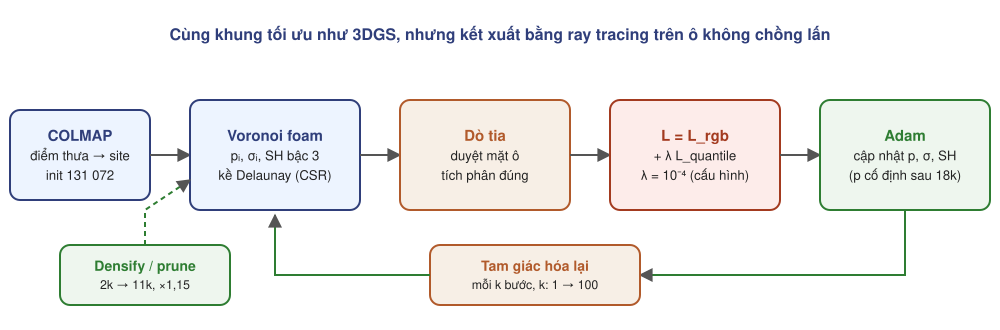
Mỗi khi vị trí đổi, kết nối phải được cập nhật bằng tam giác hóa Delaunay tăng dần; vẫn đắt với tập điểm lớn.
Sau mỗi lần densify: cập nhật mỗi bước; chu kỳ tăng thêm 2 sau mỗi lần cập nhật, tối đa 1 lần mỗi 100 bước.
7 cảnh Mip-NeRF 360, 2 cảnh Deep Blending, RTX 4090.
7 checkpoint chính thức trên RTX 2060 6 GB.
1k vòng trên bonsai; so với Plenoxels.
| Nhóm | Phương pháp | Mip-NeRF 360 | Deep Blending | ||||||
|---|---|---|---|---|---|---|---|---|---|
| PSNR | SSIM | LPIPS | FPS | PSNR | SSIM | LPIPS | FPS | ||
| Rasterization | 3DGS* | 28,69 | 0,87 | 0,22 | 293 | 29,41 | 0,90 | 0,32 | 319 |
| Mip-Splatting | 29,39 | 0,88 | 0,20 | 241 | 29,47 | 0,90 | 0,32 | 260 | |
| 3DGS-MCMC | 29,72 | 0,89 | 0,19 | 302 | 29,71 | 0,90 | 0,32 | 662 | |
| Ray marching | Plenoxels | 23,63 | 0,67 | 0,44 | < 30 | 23,06 | 0,80 | 0,51 | < 30 |
| iNGP-Big | 26,75 | 0,75 | 0,30 | < 30 | 24,96 | 0,82 | 0,39 | < 30 | |
| Mip-NeRF 360 | 29,23 | 0,84 | 0,21 | < 1 | 29,40 | 0,90 | 0,25 | < 1 | |
| Dò tia | 3DGRT** | 28,71 | 0,85 | 0,25 | 78 | 29,23 | 0,90 | 0,32 | 119 |
| RadFoam | 28,47 | 0,83 | 0,21 | 200 | 28,95 | 0,89 | 0,26 | 301 | |
| Cảnh | 3DGS | Mip-Splatting | 3DGS-MCMC | Plenoxels | iNGP | Mip-NeRF 360 | RadFoam | RadFoam − 3DGS |
|---|---|---|---|---|---|---|---|---|
| Room | 30,63 | 31,74 | 32,30 | 27,59 | 29,69 | 31,63 | 30,87 | +0,24 |
| Counter | 28,70 | 29,16 | 29,16 | 23,63 | 26,69 | 29,55 | 28,59 | −0,11 |
| Bonsai | 31,98 | 32,31 | 32,67 | 24,67 | 30,69 | 33,46 | 32,15 | +0,17 |
| Kitchen | 30,32 | 31,55 | 32,23 | 23,42 | 29,48 | 32,23 | 31,40 | +1,08 |
| Bicycle | 25,25 | 25,72 | 26,06 | 21,92 | 22,17 | 24,37 | 24,19 | −1,06 |
| Garden | 27,41 | 27,76 | 27,99 | 23,49 | 25,07 | 26,98 | 26,58 | −0,83 |
| Stump | 26,55 | 26,94 | 27,67 | 20,66 | 23,47 | 26,40 | 25,48 | −1,07 |
| DrJohnson | 28,77 | 28,76 | 29,05 | 23,14 | 28,26 | 29,14 | 28,33 | −0,44 |
| Playroom | 30,04 | 30,17 | 30,37 | 22,98 | 21,67 | 29,66 | 29,56 | −0,48 |
| Cấu hình | Bonsai | Garden | Playroom | TB |
|---|---|---|---|---|
| Không SfM | 29,65 | 25,83 | 26,34 | 27,00 |
| Không SfM, không densify | 20,23 | 18,88 | 19,55 | 19,36 |
| Không prune | 32,25 | 26,58 | 29,46 | 29,15 |
| Không quantile | 29,62 | 25,35 | 29,59 | 27,90 |
| Đầy đủ | 32,15 | 26,58 | 29,59 | 29,15 |
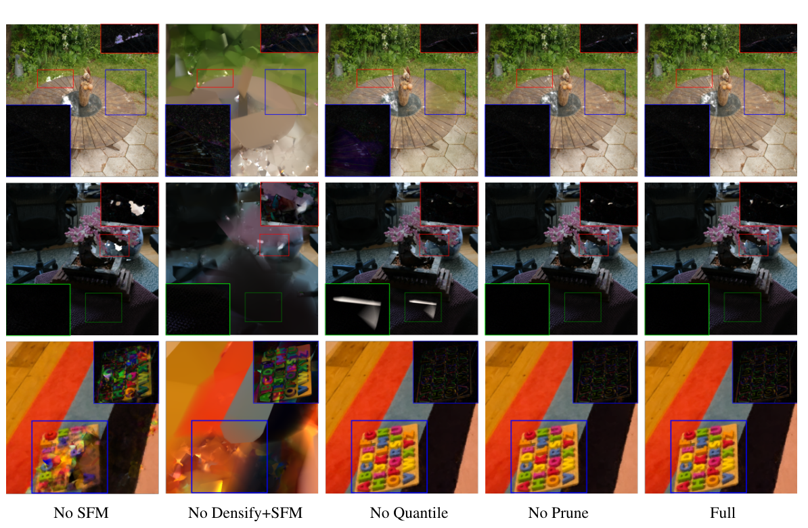
| Cảnh | Số site | PSNR (ds8, 5 view) | FPS | Bộ nhớ đỉnh |
|---|---|---|---|---|
| Bonsai | 1,97 triệu | 30,06 | 141 | 2201 MiB |
| Room | 1,89 triệu | 31,99 | 118 | 2127 MiB |
| Counter | 1,99 triệu | 27,73 | 101 | 2196 MiB |
| Kitchen | 2,05 triệu | 28,68 | 84 | 2285 MiB |
| Garden | 4,06 triệu | 24,43 | 47,6 | 4468 MiB |
| Bicycle | 4,20 triệu | 20,99 | 40,6 | 4586 MiB |
| Stump | 4,19 triệu | 23,69 | 42,9 | 4493 MiB |
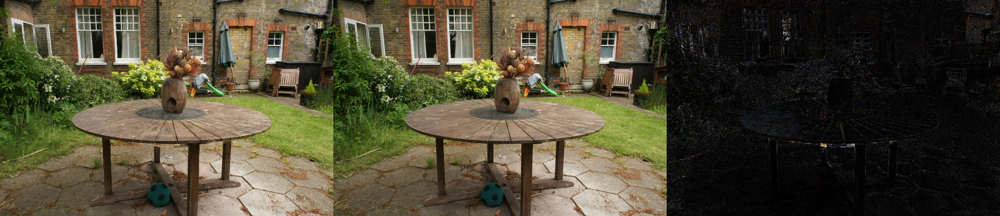
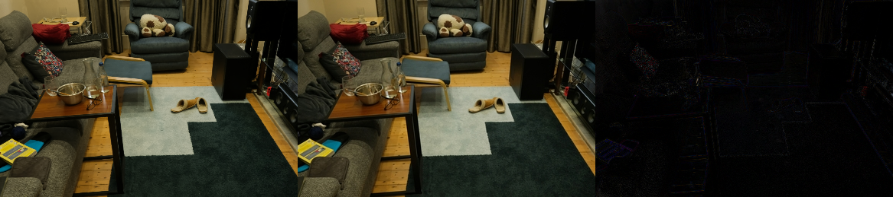
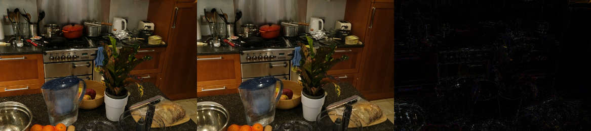
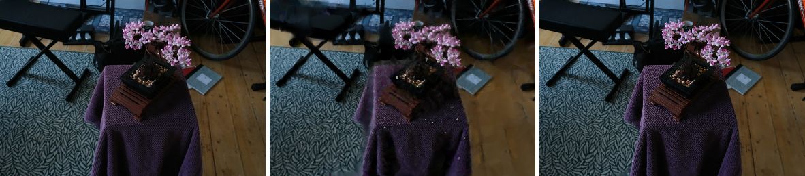
| Cấu hình (RTX 2060, bonsai) | Thời gian | PSNR | Ghi chú |
|---|---|---|---|
| RadFoam 1k vòng, ds8 | 7 ph 55 s | 25,83 dB | ≈ 191k site, chưa densify; đỉnh 2904 MiB |
| Plenoxels (svox2), cấu hình 6 GB | ≈ 2,9 ph | 23,40 dB | SSIM 0,674; huấn luyện ở 64³ rồi 128³ |
| RadFoam chính thức 20k vòng | 70 ph (RTX 4090) | 30,06 dB | 1,97 triệu site |
Biên ô buộc cách đều hai site.
Delaunay tăng dần là nút thắt.
Cảnh tĩnh, không chiếu sáng lại, không chỉnh sửa.
Mặt ô luôn nằm cách đều hai site láng giềng. Muốn định nghĩa một bề mặt sắc, cần nhiều ô nhỏ rỗng đặt sát ô có mật độ. Tác giả đề xuất tổng quát hóa vượt ra ngoài Voronoi.
Tam giác hóa có thể lỗi khi các điểm rất gần hoặc trùng nhau, nên không thể khởi tạo trực tiếp bằng cách nhân bản và nhiễu các điểm SfM tới số lượng cuối.
| Plenoxels | RadFoam | |
|---|---|---|
| Bậc tự do hình học | chỉ $\sigma$, SH trên lưới cố định | vị trí site + $\sigma$ + SH, và kết nối |
| Cập nhật topo | không | Delaunay tăng dần, dựng lại danh sách kề |
| Truy vấn tia | lưới, occupancy | đi qua mặt ô |
| Kết xuất khi dùng | trung bình | rất nhanh |
| Thí nghiệm của nhóm | Dữ liệu | PSNR | Đối chứng |
|---|---|---|---|
| Alpha trực tiếp thay mật độ, 1k vòng | bonsai | 21,07 dB | RadFoam 1k: 25,86 dB |
| Alpha bám bề mặt (pháp tuyến mỗi site, chọn mặt ô song song), tốt nhất sau 6k vòng | bonsai | 18,12 dB | RadFoam 1k: 25,86 dB |
| Lai Voronoi–SDF (α kiểu NeuS tại trung điểm đoạn), 1k vòng | bonsai, ds8 | 15,19 dB | RadFoam 1k: 25,83 dB |
| Lai Voronoi–SDF, 3k vòng | DTU scan 24 | 16,70 dB | NeuS 1k: 17,30; 300k: 26,42 |
| Hướng | Ý tưởng | Tác động kỳ vọng |
|---|---|---|
| Sơ đồ công suất (power diagram) | thêm trọng số $r_i$ cho mỗi site; ô đổi hình dạng mà site có thể đứng yên | nới ràng buộc cách đều; giảm số lần dựng lại |
| Dựng Voronoi/power trên GPU | thay bước Delaunay bằng bộ dựng song song gần tuyến tính | giảm $C_{\text{Delaunay}}$ |
| Cập nhật cục bộ | chỉ sửa các tứ diện có mặt cầu chứa điểm đã di chuyển | giảm chi phí khi gần hội tụ |
| Chu kỳ theo mức vi phạm | cập nhật khi tỉ lệ mặt vi phạm Delaunay vượt ngưỡng | giảm $N_{\text{rebuild}}$ |
| Lịch độ phân giải, cố định vị trí sớm | ảnh thô trước, học ngoại hình dày sau | giảm $N_{\text{iter}}$ |
| Tham số hình học trong ô | mặt phẳng SDF hoặc mật độ tuyến tính mỗi ô, độ phủ giải tích | bề mặt nằm trong ô, ít ô rỗng |
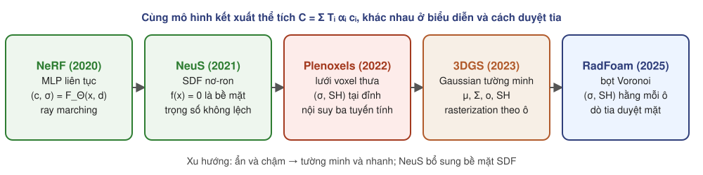
| NeRF | NeuS | Plenoxels | 3DGS | RadFoam | |
|---|---|---|---|---|---|
| Biểu diễn | MLP $(\mathbf c,\sigma)$ | MLP SDF + màu | lưới voxel thưa $(\sigma,$ SH$)$ | Gaussian tường minh | ô Voronoi tường minh |
| Tích phân dọc tia | xấp xỉ bằng mẫu | xấp xỉ, $\alpha$ dạng đóng | xấp xỉ bằng mẫu, nội suy | alpha blending, thứ tự xấp xỉ | chính xác |
| Huấn luyện | 1–2 ngày | 14–16 giờ | 11–27 phút | 26–42 phút | 70 phút (RTX 4090) |
| Kết xuất | ≈ 30 s mỗi ảnh | ≈ 320 s mỗi ảnh | 7–15 fps | 134–319 fps | 200–301 fps |
| Bề mặt | nhiễu | mặt mức 0 | nhiễu | không rõ ràng | chỉ trên mặt ô |
| Điểm yếu chính | chậm | chậm, vật đóng | bộ nhớ $O(D^3)$, cảnh thật | bộ nhớ, popping | Delaunay, ngoài trời |